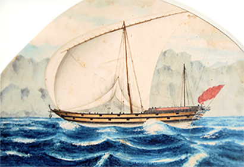

1700
The rise of Al Utoob tribe as a united power and the start of building a settlement in Kuwait (Al Grain).
Read more
1750
Sheikh Nasser Al Mathkoor along with the Al Utoob tribe invaded the islands of Bahrain. This coalition happened under the condition that the Al Utoob would be allowed to practice pearling in the Northern part of Bahrain and Qatar without being taxed by the Al Mathkoor family (Sheikh Bushehr)
Read more

1760
Al Utoob tribe moved from Al Grain to Al Zubarah expanding their settlement.
Read more
1780
Al Zubarah reached the epitome of glory as it flourished economically, and provided tax-free trade port.
Read more
1783
Nasr Al Mathkoor placed Al Zubarah under a 3 month siege and destroyed its economic power and settlements. He however failed and was beaten by the people of Al Zubarah.
Read more
1796
Al Zubarah was attacked by the command of Ibn Saoud and led by Ibrahim Al Ufaisan. Because of its flourishing economy, trade, and sectarian conflict.
Read more
1800
Due to the ongoing conflict that toke place in Al Zubrah , the economy eventually crashed and people fled and migrated to neighboring cities/countries.
Read more
1811
Al Utoob attacked Al Zubarah and drove the Saudi protectorate out.
Read more
{kind=link}
{kind=link}
{kind=link}
{kind=link}
{kind=link}
{kind=link}
{kind=link}
{kind=link}